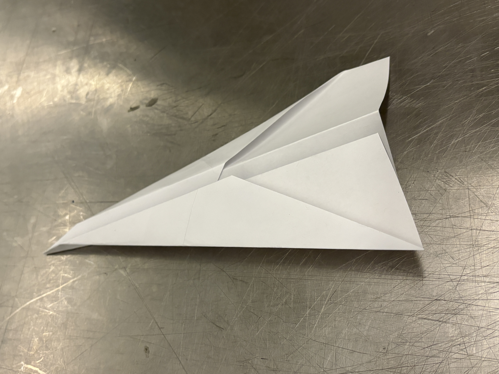
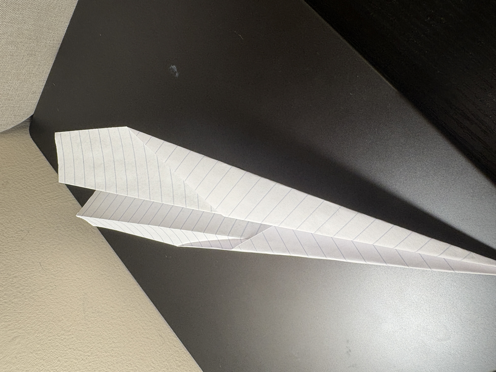
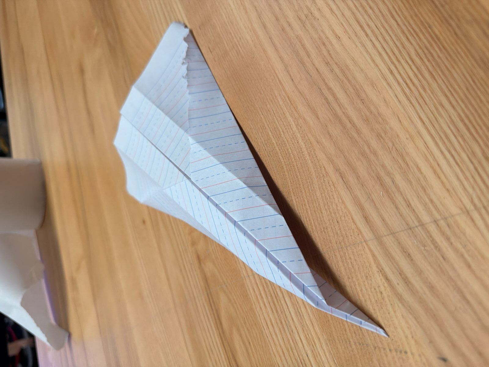

*follow examples in chronological order*
1 piece of A4 Paper or something close
Fold a sheet of A4 paper in half, hotdog style, crease it sharply with your finger or thumbnail, and then unfold it flat.
Fold the top left and top right corners down toward the center crease so their inner edges align along the middle line, making a sharp point at the top.
Fold the top angled edges inward once to meet the center crease. This sharpens it and gives the plane a narrow shape.
Fold the paper in half along the original center crease, keeping all the folded layers tucked on the inside.
Fold down one side to create a wing-like shape. Flip the paper over and repeat on the other side to make symmetrical wings.
Spread the wings open slightly so they form a V shape when looking from the front. Hold the paper underneath by the bottom and throw it gently.
3 Testers : Successful!
Builder #1 : Ruchi

Builder #2 : Aaron

Builder #3 : William
